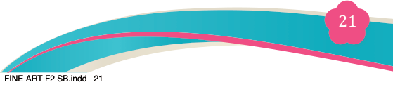
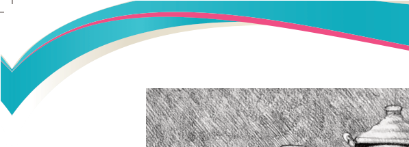
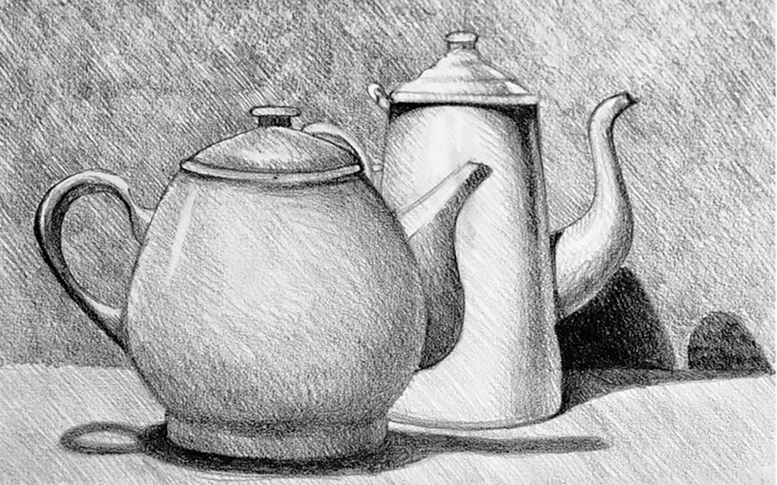
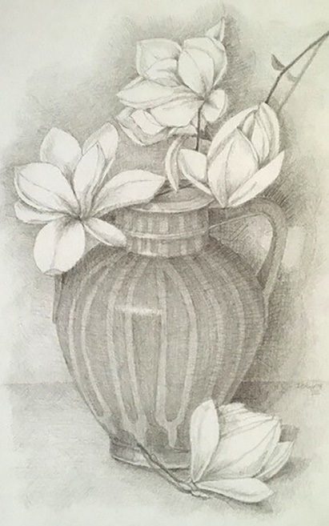
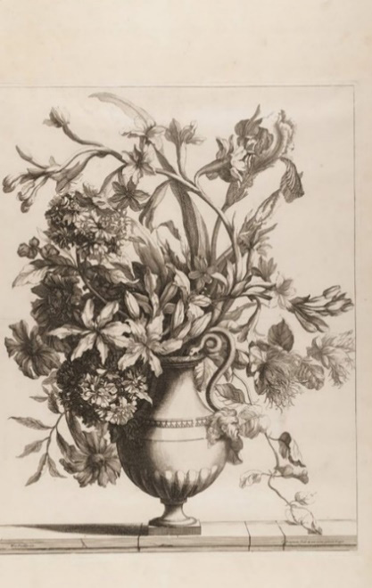

Figure 2.2 Still life, household pieces
(b) Flower pieces
This group includes all types of flowers that grow in our environment. Artists
select and choose what is needed, appropriate to draw and w h i c h communicates
a specific idea. Figure 2.3 (a & b) illustrates still life drawing of flower pieces.


(a) (b)
Figure 2.3 (a & b): Flower pieces
(c) Animal pieces
This category includes animal parts like horns, shells, skins, feathers and skulls.
It can be noted that still life of this category focuses on objects that do not move.
Figure 2.4 exemplifies a still life drawing of animal pieces.